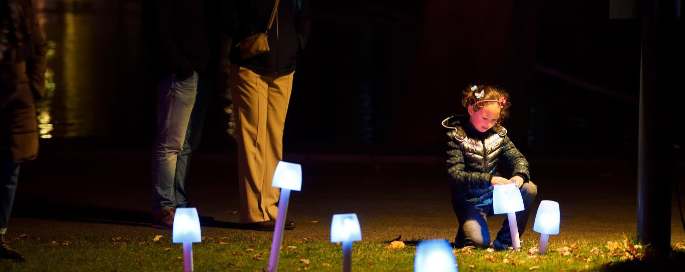

Wayfinding for Glow Festival
Magical mushrooms that form an interactive system. Visitors can activate one mushroom, which will then light up and spread its ‘spores’, guide the way through the whole exhibition.
A winding path of magical glowing mushrooms. Enchanting interaction. A unique and beautiful approach to wayfinding. That is how visitors of the Eindhoven University of Technology campus will be guided as they travel from one eye-catching installation to the next. In-between these installations, that is where the Wayfinding project shines. The mushrooms form an interactive system. Visitors can activate one mushroom, which will then light up and spread its ‘spores’, activating another mushroom near it. This creates a cascading effect of glowing mushrooms, magically enveloping the path in a sea of light.

As for the Storytelling part of the project, the team has collaborated with Barry Fitzgerald (Science Communication Officer at TU/e) to create a podcast, containing interviews with the teams responsible for the GLOW installations. Spokespeople of the teams give an exclusive insight into the process behind the scenes, describing motivations, technicalities, or other interesting remarks about their project. Visitors can tune into the podcast by scanning QR codes printed on signs close to the installations